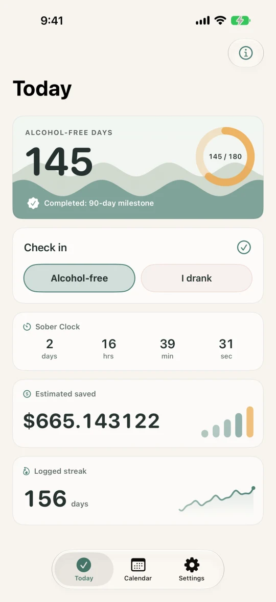
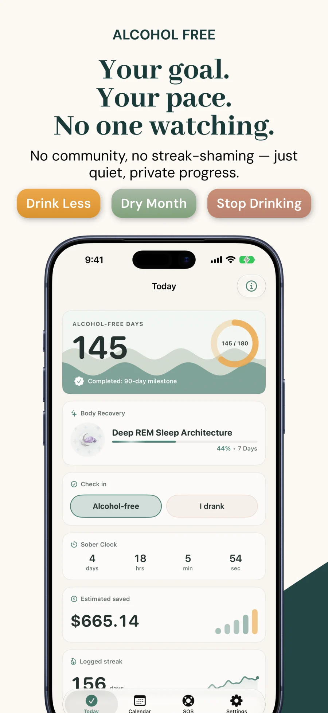
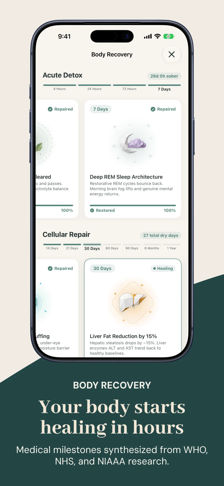
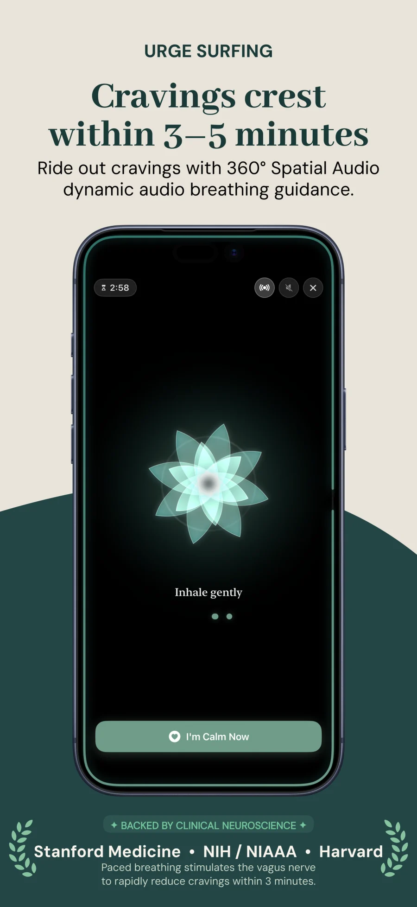
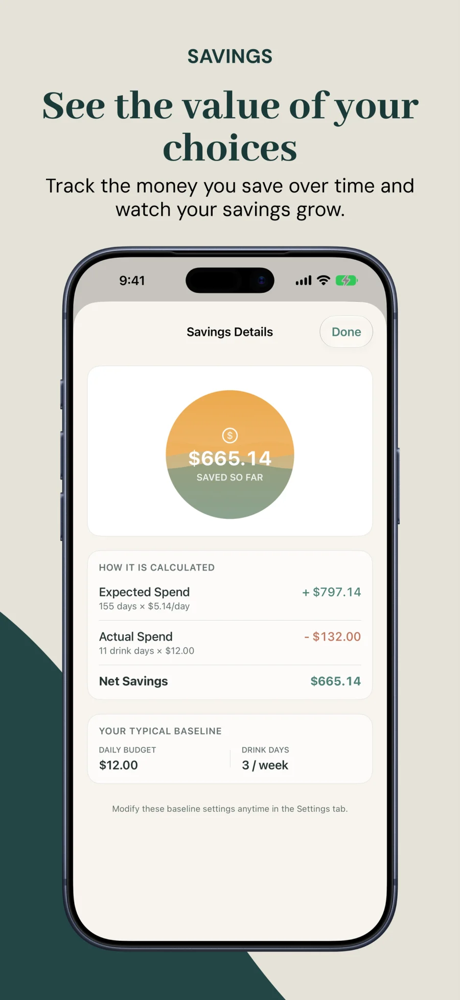
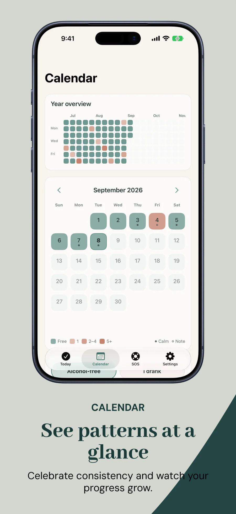
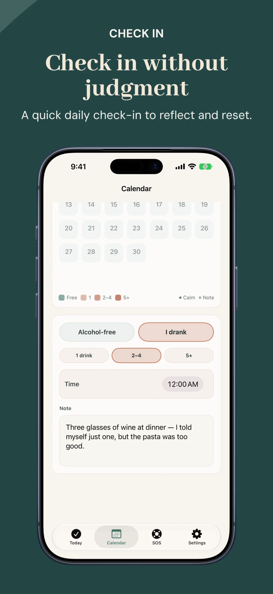
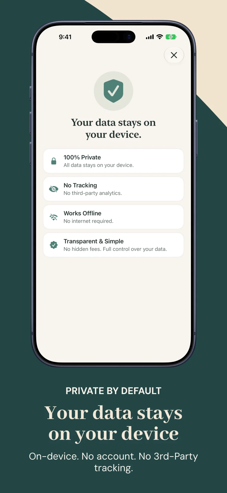
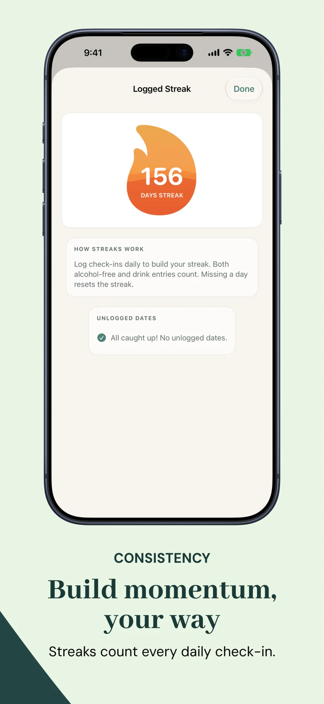

Check in without judgment
Mark an alcohol-free day or record a broad drink level (light, moderate, or heavy). Add time and a private note only when the context helps you reflect.
Your goal. Your pace. No one watching.
Support your alcohol-free or mindful-drinking goals with a judgment-free daily check-in, physiological body recovery milestones, 3-minute craving relief, and real-time savings.
For iPhone and iPad · Free to start · Flexible Pro & Lifetime options

A tracker, not a judge
No feeds, public profiles, coaching scripts, or streak-shaming. Just quiet, science-backed tools that make progress easier to notice.
Mark an alcohol-free day or record a broad drink level (light, moderate, or heavy). Add time and a private note only when the context helps you reflect.
From blood sugar normalization at 8 hours to deep REM sleep architecture at 7 days, see the physiological milestones happening inside your body.
Cravings peak and pass quickly. Open the Urge Surfing SOS tool for 360° spatial audio and paced breathing until the wave subsides.
Move between monthly and yearly heatmaps to spot trigger days, while watching your accumulated cash and drink savings grow down to the cent.
The app at a glance
Explore the latest iOS experience. Swipe or scroll horizontally to inspect all 10 screens.










Evidence-Based Guides
Actionable timelines, craving management protocols, and honest guides for sober-curious and mindful drinkers.
A detailed hour-by-hour and week-by-week breakdown of how your liver, REM sleep architecture, resting heart rate, and dopamine receptors repair after your last drink.
Read full guide →Private by design
Alcohol Free Tracker works without an account or network connection. Your profile, check-ins, notes, and drinking history stay on your device.

For iPhone and iPad
Track honestly, watch your body recover, and see your savings add up—100% privately.
Support
Find quick answers here or send an email if you need a hand.
Quick answers
Your profile, check-ins, drink levels, times, and notes are stored locally on your device. The app does not upload your personal logs to any external server.
No. Alcohol Free Tracker works immediately without registration, login, or an internet connection.
Yes. Daily check-ins let you log an alcohol-free day or record a light, moderate, or heavy drink level without resetting your logged reflection streak.
Open Settings, choose Export, and save the portable JSON file to your files or iCloud Drive. To restore it on a new phone, choose Import.
No. The app is a self-directed tracking tool, not medical advice, diagnosis, treatment, counseling, or emergency withdrawal support.